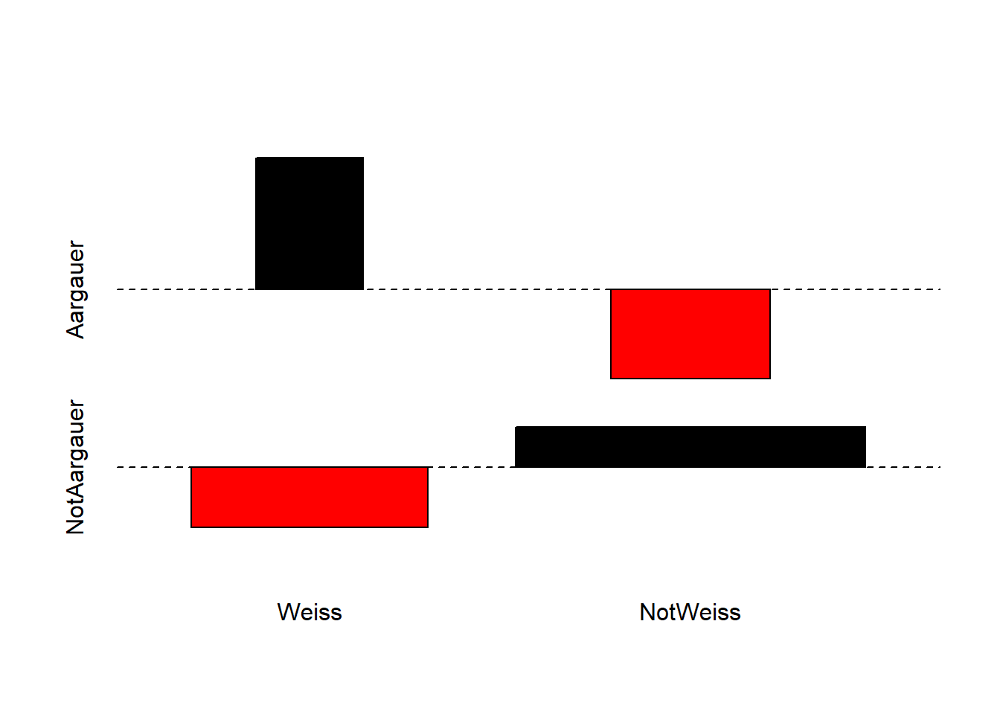

Download dieses Lösungsscript via “</>Code” (oben rechts)
Musterlösung Übung 1.1: Assoziationstest
In diesem Beispiel soll einem Klischee auf den Grund gegagen werden: Sind Aargauer überdurchschnittlich mit weissen Socken assoziiert? Die Datenerhebung basiert auf männlichen Studenten bei denen folgende beiden binären Variablen erhoben wurden:
Die Hypothese ist: Das Klischee trifft zu, weisse Socken sind überdurchschnittlich häufig mit Aargauer Studenten assoziiert.
Die Datenerhebung unter 35 Studenten ergab folgende Datengrundlage:
Weisssockige Aargauer: 4
Nicht-weisssockige Aargauer: 2
Weissockige nicht-Aargauer: 7
Nicht-weisssockige nicht-Aargauer: 22
# Matrix erstellenAargauer <-c(4, 2)names(Aargauer) <-c("Weiss", "NotWeiss")NotAargauer <-c(7, 22)names(NotAargauer) <-c("Weiss", "NotWeiss")AGsocks <-data.frame(Aargauer, NotAargauer)AGsocks <-as.matrix(AGsocks)AGsocks## Aargauer NotAargauer## Weiss 4 7## NotWeiss 2 22# Daten anschauen mit erstem Google-Ergebnis für 'Assoziation Plot r'assocplot(AGsocks) # Interpretation des Plots mit dem Befehl ?assocplot

Der Assoziationsplot zeigt, dass in den Daten weisse Socken bei den Aargauern überverterten und bei den Nicht-Aargauern untervertreten sind.
Für kleine Erwartungswerte in den Zellen (< 5) ist der Chi-Quadrat-Test nicht zuverlässig (siehe “Warning message”). Darum wird mit Fishers exaktem Test gearbeitet.
# Tests durchführenchisq.test(AGsocks) # Chi-Quadrat-Test nur zum anschauen.## ## Pearson's Chi-squared test with Yates' continuity correction## ## data: AGsocks## X-squared = 2.4323, df = 1, p-value = 0.1189fisher.test(AGsocks) # 'Fisher's Exact Test for Count Data'## ## Fisher's Exact Test for Count Data## ## data: AGsocks## p-value = 0.06323## alternative hypothesis: true odds ratio is not equal to 1## 95 percent confidence interval:## 0.6811227 78.4336189## sample estimates:## odds ratio ## 5.897263
Ergebnisse
In den erhobenen Daten konnte keine signifikante Assoziation zwischen Kantonangehörigkeit (AG, nicht-AG) und Sockenfarbe (weiss, nicht-weiss) festgestellt werden. Der p-Wert von Fishers exaktem Test war nur marginal signifikant (p = 0.063). Das nicht-signfikante Resultat überrascht auf den ersten Blick, denn der “odds ratio” im Datensatz ist mit 5.9 relativ hoch und 67 % der Aargauer trugen weisse Socken während nur 24 % der Nicht-Aargauer weisse Socken trugen. Doch war der Anteil von nur 6 Aargauer in der nur 35 Männer umfassenden Stichprobe relativ klein, um ein verlässliches Bild der Sockenpräferenzen der Aargauer zu machen. Insofern leuchtet es ein, das bei dieser kleinen und unausgewogenen Stichprobe die “Power” des satistischen Tests (um die Nullhypothese zu verwerfen) relativ klein ist.
\(H_0\): Es gibt keine Unterschiede in den Verkaufszahlen zwischen Basis- und Interventionswochen.
\(H_1\): Es gibt Unterschiede in den Verkaufszahlen zwischen Basis- und Interventionswochen.
#lade Datendf <- readr::read_csv2("datasets/statistik/Datensatz_novanimal_Uebung_Statistik1.2.csv")# überprüft die Voraussetzungen für einen t-Testggplot(df, aes(x = condit, y= tot_sold)) +# achtung 0 Punkt fehltgeom_boxplot(fill ="white", color ="black", size =1) +labs(x="\nBedingungen", y="Durchschnittlich verkaufte Gerichte pro Woche\n") + mytheme
# Auf den ersten Blick scheint es keine starken Abweichungen zu einer #Normalverteilung zu geben resp. es sind keine extremen schiefen Verteilungen# ersichtlich (vgl. Skript Statistik 2)
# führt einen t-Tests durch; es wird angenommen, dass die Verkaufszahlen# zwischen den Bedingungen unabhängig sindt_test <-t.test(tot_sold ~ condit, data = df, var.equl = T)t_test## ## Welch Two Sample t-test## ## data: tot_sold by condit## t = 0.27168, df = 9.9707, p-value = 0.7914## alternative hypothesis: true difference in means between group Basis and group Intervention is not equal to 0## 95 percent confidence interval:## -115.2743 147.2743## sample estimates:## mean in group Basis mean in group Intervention ## 2203 2187# alternative Formulierungt.test(df[df$condit =="Basis", ]$tot_sold, df[df$condit =="Intervention", ]$tot_sold)## ## Welch Two Sample t-test## ## data: df[df$condit == "Basis", ]$tot_sold and df[df$condit == "Intervention", ]$tot_sold## t = 0.27168, df = 9.9707, p-value = 0.7914## alternative hypothesis: true difference in means is not equal to 0## 95 percent confidence interval:## -115.2743 147.2743## sample estimates:## mean of x mean of y ## 2203 2187
Methoden
Ziel war es die aggregierten Verkaufszahlen zwischen den Interventions- und Basiswochen zu vergleichen. Die Annahme ist, dass die wöchentlichen Verkaufszahlen unabhängig sind. Daher können die Unterschiede zwischen den Verkaufszahlen pro Woche zwischen den beiden Bedingungen mittels t-Test geprüft werden. Obwohl die visuelle Inspektion keine schwerwiegenden Verletzungen der Modelvoraussetzung zeigte (mit Ausnahme eines Ausreissers), wurde einen Welch t-Test gerechnet. Zudem muss gesagt werden, dass die Gruppengrösse hier jeweils mit n = 6 (Anzahl Wochen) eher klein ist. T-test liefern dennoch relativ reliable Resultate. Für mehr Infos dazu hier eine Studie.
Ergebnisse
In den Basiswochen werden mehr Gerichte pro Woche verkauft als in den Interventionswochen (siehe Abbildung 1). Die wöchentlichen Verkaufszahlen zwischen den Bedingungen (Basis oder Intervention) unterscheiden sich gemäss Welch t-Test jedoch nicht signifikant (t(10) = 0.272 , p = 0.791). Die Ergebnisse könnten mit einem \(\chi^2\)-Test nochmals validiert werden, da die Gruppengrösse mit n = 6 doch eher klein ist.
Abbildung 18.1: Die wöchentlichen Verkaufszahlen für die Interventions- und Basiswochen unterscheiden sich nicht signifikant.
Quellcode
---date: 2022-10-31lesson: Stat1thema: Grundlagen der Statistikindex: 4format: html: code-tools: source: true---# Stat1: Lösung- Download dieses Lösungsscript via "\</\>Code" (oben rechts)## Musterlösung Übung 1.1: AssoziationstestIn diesem Beispiel soll einem Klischee auf den Grund gegagen werden: **Sind Aargauer überdurchschnittlich mit weissen Socken assoziiert?** Die Datenerhebung basiert auf männlichen Studenten bei denen folgende beiden binären Variablen erhoben wurden:- Sockenfarbe: weiss, nicht-weiss- Selbstdeklarierte Kantonsangehörigkeit: AG, nicht-AGDie Hypothese ist: Das Klischee trifft zu, weisse Socken sind überdurchschnittlich häufig mit Aargauer Studenten assoziiert.Die Datenerhebung unter 35 Studenten ergab folgende Datengrundlage:- Weisssockige Aargauer: 4- Nicht-weisssockige Aargauer: 2- Weissockige nicht-Aargauer: 7- Nicht-weisssockige nicht-Aargauer: 22```{r}#| echo: false#| results: hide#lade Packageslibrary(ggplot2)library(dplyr)library(readr)## definiert mytheme für ggplot2 (verwendet dabei theme_classic())mytheme <-theme_classic() +theme(axis.line =element_line(color ="black"), axis.text =element_text(size =12, color ="black"), axis.title =element_text(size =12, color ="black"), axis.ticks =element_line(size = .75, color ="black"), axis.ticks.length =unit(.5, "cm") )``````{r}# Matrix erstellenAargauer <-c(4, 2)names(Aargauer) <-c("Weiss", "NotWeiss")NotAargauer <-c (7,22)names(NotAargauer) <-c("Weiss", "NotWeiss")AGsocks <-data.frame(Aargauer, NotAargauer)AGsocks <-as.matrix(AGsocks)AGsocks# Daten anschauen mit erstem Google-Ergebnis für "Assoziation Plot r"assocplot(AGsocks) # Interpretation des Plots mit dem Befehl ?assocplot```Der Assoziationsplot zeigt, dass in den Daten weisse Socken bei den Aargauern überverterten und bei den Nicht-Aargauern untervertreten sind.Für kleine Erwartungswerte in den Zellen (\< 5) ist der Chi-Quadrat-Test nicht zuverlässig (siehe "Warning message"). Darum wird mit Fishers exaktem Test gearbeitet.```{r}# Tests durchführenchisq.test(AGsocks) # Chi-Quadrat-Test nur zum anschauen.fisher.test(AGsocks) # "Fisher's Exact Test for Count Data"```### ErgebnisseIn den erhobenen Daten konnte keine signifikante Assoziation zwischen Kantonangehörigkeit (AG, nicht-AG) und Sockenfarbe (weiss, nicht-weiss) festgestellt werden. Der *p*-Wert von Fishers exaktem Test war nur marginal signifikant (*p* = 0.063). Das nicht-signfikante Resultat überrascht auf den ersten Blick, denn der "odds ratio" im Datensatz ist mit 5.9 relativ hoch und 67 % der Aargauer trugen weisse Socken während nur 24 % der Nicht-Aargauer weisse Socken trugen. Doch war der Anteil von nur 6 Aargauer in der nur 35 Männer umfassenden Stichprobe relativ klein, um ein verlässliches Bild der Sockenpräferenzen der Aargauer zu machen. Insofern leuchtet es ein, das bei dieser kleinen und unausgewogenen Stichprobe die "Power" des satistischen Tests (um die Nullhypothese zu verwerfen) relativ klein ist.## Musterlösung Übung 1.2: t-Test> Leseempfehlung Kapitel 2 von [Manny Gimond](https://mgimond.github.io/Stats-in-R/z_t_tests.html)### Null- und Alternativhypothese$H_0$: Es gibt keine Unterschiede in den Verkaufszahlen zwischen Basis- und Interventionswochen.$H_1$: Es gibt Unterschiede in den Verkaufszahlen zwischen Basis- und Interventionswochen.```{r}#lade Datendf <- readr::read_csv2("datasets/statistik/Datensatz_novanimal_Uebung_Statistik1.2.csv")# überprüft die Voraussetzungen für einen t-Testggplot(df, aes(x = condit, y= tot_sold)) +# achtung 0 Punkt fehltgeom_boxplot(fill ="white", color ="black", size =1) +labs(x="\nBedingungen", y="Durchschnittlich verkaufte Gerichte pro Woche\n") + mytheme# Auf den ersten Blick scheint es keine starken Abweichungen zu einer #Normalverteilung zu geben resp. es sind keine extremen schiefen Verteilungen# ersichtlich (vgl. Skript Statistik 2)``````{r}# führt einen t-Tests durch; # es wird angenommen, dass die Verkaufszahlen zwischen den Bedingungen # unabhängig sindt_test <-t.test(tot_sold ~ condit, data=df, var.equl = T)t_test#alternative Formulierungt.test(df[df$condit =="Basis", ]$tot_sold, df[df$condit =="Intervention", ]$tot_sold) ```### MethodenZiel war es die aggregierten Verkaufszahlen zwischen den Interventions- und Basiswochen zu vergleichen. Die Annahme ist, dass die wöchentlichen Verkaufszahlen unabhängig sind. Daher können die Unterschiede zwischen den Verkaufszahlen pro Woche zwischen den beiden Bedingungen mittels t-Test geprüft werden. Obwohl die visuelle Inspektion keine schwerwiegenden Verletzungen der Modelvoraussetzung zeigte (mit Ausnahme eines Ausreissers), wurde einen Welch t-Test gerechnet. Zudem muss gesagt werden, dass die Gruppengrösse hier jeweils mit n = 6 (Anzahl Wochen) eher klein ist. T-test liefern dennoch relativ reliable Resultate. Für mehr Infos dazu hier eine [Studie](https://scholarworks.umass.edu/cgi/viewcontent.cgi?article=1307&context=pare).### ErgebnisseIn den Basiswochen werden mehr Gerichte pro Woche verkauft als in den Interventionswochen (siehe Abbildung 1). Die wöchentlichen Verkaufszahlen zwischen den Bedingungen (Basis oder Intervention) unterscheiden sich gemäss Welch t-Test jedoch nicht signifikant (*t*(`r round(t_test$parameter[[1]],digits = 0)`) = `r round(t_test$statistic, digits = 3)` , *p* = `r round(t_test$p.value, digits=3)`). Die Ergebnisse könnten mit einem $\chi^2$-Test nochmals validiert werden, da die Gruppengrösse mit n = 6 doch eher klein ist.```{r}#| echo: false#| label: fig-ggplot-boxplot-final#| fig.cap: Die wöchentlichen Verkaufszahlen für die Interventions- und Basiswochen unterscheiden#| sich nicht signifikant.#| out.width: 80%# zeigt die Ergebnisse mit einer Abbildungp <-ggplot(df, aes(x = condit, y= tot_sold)) +# erzeugt sogenannte Whiskers mit Strichen, achtung reihenfloge zählt hierstat_boxplot(geom ='errorbar', width = .25) +geom_boxplot(fill ="white", color ="black", size =1) +labs(x="\nBedingungen", y="Durchschnittlich verkaufte Gerichte pro Woche\n") + mythemeprint(p)```